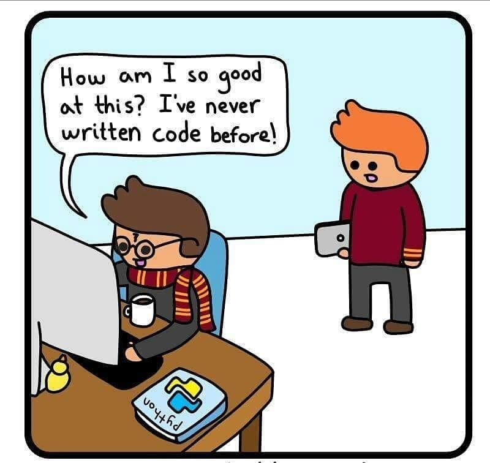
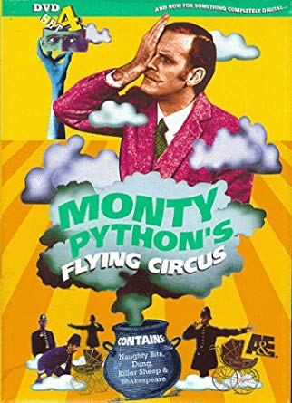

A Q&A Session¶

Why should you learn Python?¶
According to multiple sources (StackOverflow, Codeburst, TIOBE), Python is one of the ~~top 10~~ top 5 programming languages of 2019. Python, being a high level language, allows you to focus on the core functionality of the application by taking care of common programming tasks. It’s dead simple syntax rules makes it easier to keep the code readable and maintainable.
To sum it up:
Readable and maintainable code
Multiple programming paradigms
Compatible with major platforms and systems
Batteries included
Test Driven Development (TDD)
Open Source Frameworks and Standard Library
What can you do with Python?¶
Python is a very versatile programming language, with a plethora of uses in a variety of different applications. There are so many applications of Python, but based on my observation, there are 3 main popular applications:
Data Science: Data Analysis, Visualization and Machine Learning
Scripting
Web Development
Other popular applications:
GUI
Database Programming
Rapid Prototyping
Image Processing
Game Development
Why is it called Python?¶
Guido van Rossum (Author of Python Programming Language) began implementing Python, who was also reading the published scripts from “Monty Python’s Flying Circus”, a BBC comedy series from 1970s.

What are Python’s strengths?¶
It’s free
It’s portable
It’s powerful
It’s easy to use
It’s easy to learn
It’s Object-Oriented
So what are the downsides?¶
It’s speed
It’s not for mobile development
It’s heavy on memory consumption
It’s produces Run-Time errors
It ‘s underdeveloped database access layer
Is Python a scripting language?¶
Python is a general purpose programming language that is often used in scripting applications as well. The term “scripting” can have different meaning to different individuals.
How does Python compare to language X?¶
Python is often compared to other languages like Java, JavaScript, Perl, Go, and even C/C++.
Summary:
Cleaner syntax and simpler design
Simpler and easier to user
Powerful and cross-platform
Is growing fast
Performance
Dynamically typed
Python 3 or Python 2?¶
You should use Python 3 going forward. As of January 2020 Python 2 will be in EOL (End Of Life) status and receive no further official support. After that date, there will be no further updates nor bugfixes. Since this end-of-life date has been planned for nearly a decade (the first end-of-life date was slated to happen in 2014, and was pushed back to 2020), and nearly all popular libraries have already ported their code, Python 2.x is well on its way to obsolescence. As such, we can only recommend learning and teaching Python 3.
Where is Python used?¶
Python is widely used by companies and developers to build web apps, automate operations in DevOps, Enterprise applications, data analysis etc.
Netflix
Google
Uber
Instagram and Facebook
Dropbox
NASA
Quora
Spotify